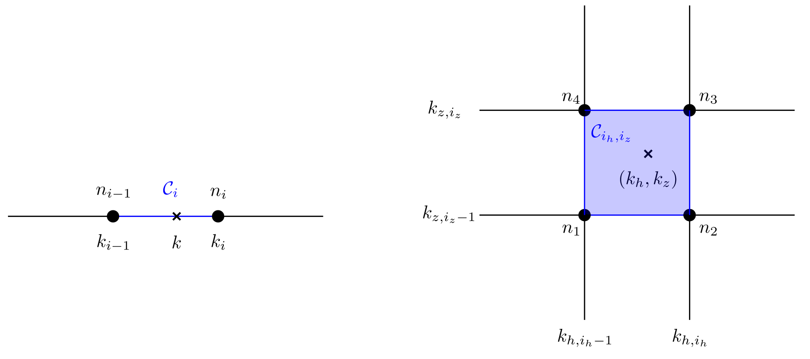

Numerical methods
Grid
Here are the methods used to create grids and compute related quantities.
WavKinS.LogRange — MethodLogRange(kmin,kmax,M)Create M logarithmic grid points between kmin and kmax.
WavKinS.area_ratio — Methodarea_ratio(yi,yu,yl,yr)Area of a box (x,y) ∈ [xl,xr] × [yi,yu] that is below the line passing by (xl,yl) and (xr,yr), divided by the total area of the box.
Note: does not depend on xl and xr.
WavKinS.area_ratio_grid — Methodarea_ratio_grid(x, y, f)For each cell of the grid x × y, return the area under f divided by the total area of the box.
Note: convolution allows to integrate over y < f.
WavKinS.area_ratio_logbins — Methodarea_ratio_logbins(kkh, kkz, logλz, f)Same as area_ratio_grid but for logarithmic grids.
kkh: horizontal wave vectors grid pointskkz: vertical wave vectors grid pointslogλz: log(λz) where λz is the logarithmic increment of the vertical wave vectors gridf: values offvskkh
Note: convolution allows to integrate over kkz < f.
WavKinS.change_mesh! — Methodchange_mesh!(Nknew,Nkold;interp_scheeme=BS_interp)Fill Nknew wave action spectrum from interpolation interp_scheeme of Nkold.
WavKinS.meshgrid — Methodmeshgrid(x, y)Create 2D grids from the 1D vectors x and y.
Interpolation
In the following figure, we represent a mesh of the wave vector grid for 1D systems (left) and 2D systems (right) problem.

For 1D systems, the $i^{\rm th}$ mesh is $\mathcal{C}_i \equiv [k_{i-1}: k_{i}]$ except for the first mesh which correspond to the segment $\mathcal{C}_1 = [0:k_1]$. We extend this definition to 2D systems as $\mathcal{C}_{i_h,i_z} \equiv [k_{h,i_h-1}: k_{h,i_h}] \times [k_{z,i_z-1}: k_{z,i_z}]$.
Inside each mesh, we use a given mathematical expression for interpolating the waveaction at $k$ (or $(k_h,k_z)$) knowing the value of the waveaction $n_{i-1} = n(k_{i-1})$ and $n_i = n(k_i)$ (or $n_1 = n(k_{h,i_h-1}, k_{z,i_z-1})$, $n_2 = n(k_{h,i_h}, k_{z,i_z-1})$, $n_3 = n(k_{h,i_h}, k_{z,i_z})$ and $n_4 = n(k_{h,i_h-1}, k_{z,i_z})$). This mathematical expression depends on the interpolation method.
For using the linear interpolation method lin_interp with the Acoustic2D solver, you define the simulation strucure Run as Run = Acoustic2D(Nk; interp_scheeme=WavKinS.lin_interp).
For each interpolation method, we store interpolation coefficients in stuctures that are defined in src/interpolation/WavKinS_interpolation_structs.jl. We compute these coefficients using the update_coeff_interp! method (one definition per interpolation method). Once the coefficients have been updated, you can compute the value of the waveaction at point $k$ (or $(k_h,k_z)$) using the method val_nk.
val_nk is overloaded to allow changing the interpolation scheme without changing anything in the solvers. For more informations about the interpolations methods, please refer to update_coeff_interp! documentation.
WavKinS.BS_interp — MethodBS_interp(kk::AbstractVector)Allocate nodes for BSplines interpolation. See val_nk.
WavKinS.bilin_interp_khkz — Methodbilin_interp_khkz(kkh::AbstractVector, kkz::AbstractVector)Allocate coefficients for bilinear interpolation and define interpolation method. See val_nk.
WavKinS.bilinlog_interp_khkz — Methodbilinlog_interp_khkz(kkh::AbstractVector, kkz::AbstractVector)Allocate coefficients for bilinear interpolation in log scale and define interpolation method. See val_nk.
WavKinS.cpow_interp_khkz — Methodcpow_interp_khkz(kkh::AbstractVector, kkz::AbstractVector)Allocate coefficients for cpow interpolation and define interpolation method. See val_nk.
WavKinS.exp_interp_khkz — Methodexp_interp_khkz(kkh::AbstractVector, kkz::AbstractVector)Allocate coefficients for exponential interpolation and define interpolation method. See val_nk.
WavKinS.lin_interp — Methodlin_interp(kk::AbstractVector)Allocate coefficients for linear interpolation and define interpolation method. See val_nk.
WavKinS.linlog_interp — Methodlinlog_interp(kk::AbstractVector)Allocate coefficients for linear interpolation in log scale (power law) and define interpolation method. See val_nk.
WavKinS.powGauss_interp — MethodpowGauss_interp(kk::AbstractVector)Allocate coefficients for power-law Gaussian interpolation. See val_nk.
WavKinS.powexp_interp — Methodpowexp_interp(kk::AbstractVector)Allocate coefficients for power-law exponential interpolation. See val_nk.
WavKinS.bilin_interp_vs — Methodbilin_interp_vs(kh,kz,khinf,khsup,kzinf,kzsup,n1,n2,n3,n4)Return the bilinear interpolation of $n_{\bf k}$ at point (kh,kz) computed using the points (khinf,kzinf,n1), (khsup,kzinf,n2), (khsup,kzsup,n3) and (khinf,kzsup,n4).
WavKinS.lin_interp_vs — Methodlin_interp_vs(k,k1,k2,n1,n2)Return the linear interpolation of $n_k$ at point k computed using the points (k1,n1) and (k2,n2)
$n_k = n_1 \frac{k_2-k}{k_2-k_1} + n_2 \frac{k-k_1}{k_2-k_1}.$
WavKinS.update_coeff_interp! — Methodupdate_coeff_interp!(interp::BS_interp,Nk::wave_spectrum)Compute the coefficients for B-spline interpolation. The method is given by the BSplineKit package.
Nk: Structure containing the wave action wave_spectruminterp: structure where the coefficients are stored
WavKinS.update_coeff_interp! — Methodupdate_coeff_interp!(::bilin_interp_khkz, Nk::wave_spectrum_khkz)Compute the coefficients $C_0$, $\alpha_h$, $\alpha_z$ and $\beta$ for bilinear interpolation such that $n_{\bf k} = C_0 - \alpha_h k_h - \alpha_z k_z - \beta k_h k_z$.
Nk: Structure containing the wave action wave_spectruminterp: structure where the coefficients are stored
WavKinS.update_coeff_interp! — Methodupdate_coeff_interp!(::bilinlog_interp_khkz, Nk::wave_spectrum_khkz)Compute the coefficients $C_0$, $\alpha_h$, $\alpha_z$ and $\beta$ for bilinear interpolation in logarithmic scale (power law) such that $n_{\bf k} = e^{C_0 - \alpha_h \log k_h - \alpha_z \log k_z - \beta \log k_h \log k_z}$.
Nk: Structure containing the wave action wave_spectruminterp: structure where the coefficients are stored
WavKinS.update_coeff_interp! — Methodupdate_coeff_interp!(::cpow_interp_khkz, Nk::wave_spectrum_khkz)Compute the coefficients $C_0$, $\alpha_h$, $\alpha_z$ and $\beta$ for bilinear interpolation such that $n_{\bf k} = \beta + C_0 k_h^{-\alpha_h} k_z^{-\alpha_z k_z}$.
Nk: Structure containing the wave action wave_spectruminterp: structure where the coefficients are stored
WavKinS.update_coeff_interp! — Methodupdate_coeff_interp!(::exp_interp_khkz, Nk::wave_spectrum_khkz)Compute the coefficients $C_0$, $\alpha_h$, $\alpha_z$ and $\beta$ for exponential interpolation such that $n_{\bf k} = e^{C_0 - \alpha_h k_h - \alpha_z k_z - \beta k_h k_z}$.
Nk: Structure containing the wave action wave_spectruminterp: structure where the coefficients are stored
WavKinS.update_coeff_interp! — Methodupdate_coeff_interp!(::lin_interp,Nk::wave_spectrum)Compute the coefficients $\alpha$ and $\beta$ for linear interpolation such that $n_{\bf k} = \alpha + \beta k$.
Nk: Structure containing the wave action wave_spectruminterp: structure where the coefficients are stored
WavKinS.update_coeff_interp! — Methodupdate_coeff_interp!(::linlog_interp,Nk::wave_spectrum)Compute the coefficients $\alpha$ and $C_0$ for linear interpolation in logarithmic scale (power law) such that $n_{\bf k} = C_0 k^{-\alpha} = C_0 e^{- \alpha \log k}$.
Nk: Structure containing the wave action wave_spectruminterp: structure where the coefficients are stored
WavKinS.update_coeff_interp! — Methodupdate_coeff_interp!(::powexp_interp,Nk::wave_spectrum)Compute the coefficients $C_0$, $\alpha$ and $\beta$ for power law Gaussian interpolation such that $n_{\bf k} = C_0 k^{-\alpha} e^{-\beta k^2}$.
Nk: Structure containing the wave action wave_spectruminterp: structure where the coefficients are stored
WavKinS.update_coeff_interp! — Methodupdate_coeff_interp!(::powexp_interp,Nk::wave_spectrum)Compute the coefficients $C_0$, $\alpha$ and $\beta$ for power law exponential interpolation such that $n_{\bf k} = C_0 k^{-\alpha} e^{-\beta k}$.
Nk: Structure containing the wave action wave_spectruminterp: structure where the coefficients are stored
WavKinS.val_nk — Methodval_nk(::bilin_interp_khkz, Nk::wave_spectrum_khkz, kh, kz)Return the value of Nk.nk interpolated at (kh, kz) (with bilin_interp_khkz). Coefficients should be updated.
See also update_coeff_interp!
WavKinS.val_nk — Methodval_nk(::bilinlog_interp_khkz, Nk::wave_spectrum_khkz, kh, kz)Return the value of Nk.nk interpolated at (kh, kz) (with bilinlog_interp_khkz). Coefficients should be updated.
See also update_coeff_interp!
WavKinS.val_nk — Methodval_nk(::cpow_interp_khkz, Nk::wave_spectrum_khkz, kh, kz)Return the value of Nk.nk interpolated at (kh, kz) (with cpow_interp_khkz). Coefficients should be updated.
See also update_coeff_interp!
WavKinS.val_nk — Methodval_nk(::exp_interp_khkz, Nk::wave_spectrum_khkz, kh, kz)Return the value of Nk.nk interpolated at (kh, kz) (with exp_interp_khkz). Coefficients should be updated.
See also update_coeff_interp!
WavKinS.val_nk — Methodval_nk(::lin_interp,Nk::waveaction,k)Return the value of Nk.nk interpolated at k (with lin_interp). Coefficients should be updated.
See also update_coeff_interp!
WavKinS.val_nk — Methodval_nk(::linlog_interp,Nk::waveaction,k)Return the value of Nk.nk interpolated at k (with linlog_interp). Coefficients should be updated.
See also update_coeff_interp!
WavKinS.val_nk — Methodval_nk(interp::powGauss_interp, Nk::wave_spectrum, k)Return the value of Nk.nk interpolated at k (with powGauss_interp). Coefficients should be updated.
See also update_coeff_interp!
WavKinS.val_nk — Methodval_nk(::powexp_interp,Nk::waveaction,k)Return the value of Nk.nk interpolated at k (with powexp_interp). Coefficients should be updated.
See also update_coeff_interp!
Integration
Like for "interpolation", you can choose an integration method (independently). Integration are performed by summing over meshes using the integrate method (one definition per interpolation method).
For using the integration method integrate_with_log_bins to integrate Nk.nk over meshes imin to imax, you use integrate(integrate_with_log_bins, Nk, imin, imax). Note that integrate(integrate_with_log_bins, Nk, i, i) return the integral over mesh i only (i.e. between $k_{i-1}$ and $k_i$).
WavKinS.integrate_with_cpow_khkz — Typeintegrate_with_cpow_khkz()Select the use of the cpow integration with log bins khkz method. See integrate.
WavKinS.integrate_with_log_bins_khkz — Typeintegrate_with_log_bins_khkz()Select the use of the trapezoidal integration with log bins khkz method. See integrate.
WavKinS.clean_waveaction! — Methodclean_waveaction!(Nk::waveaction)Set the minimum of the waveaction spectrum Nk.nk to min_nk. By default min_nk=0 so it removes negative values.
WavKinS.cumintegrate! — Methodcumintegrate!(CumInt::AbstractVector, M::Int, λ::Float64, logλ::Float64, kk::Vector{Float64}, F::Vector{Float64})Compute cumulative integral of F using log bins and trapezoidal rule. The result is stored in CumInt.
M: number of grid pointsλ: logarithmic increment of the gridlogλ: log(λ)kk: grid
See also integrate_with_log_bins.
WavKinS.cumintegrate! — Methodcumintegrate!(CumInt::AbstractVector, Sk::wave_spectrum)Compute cumulative integral of Sk.Nk using log bins and trapezoidal rule. The result is stored in CumInt.
WavKinS.cumintegraterev! — Methodcumintegraterev!(CumInt::AbstractVector, M::Int, λ::Float64, logλ::Float64, kk::Vector{Float64}, F::Vector{Float64})Compute cumulative integral using log bins in reverse order.
WavKinS.cumintegraterev! — Methodcumintegraterev!(CumInt::AbstractVector, Sk::wave_spectrum)Compute cumulative integral using log bins in reverse order.
WavKinS.integrate — Functionintegrate(Nk::wave_spectrum, imin::Int=1, imax::Int=-1)Return the integral of Nk.nk using (simple) trapezoidal rule from index imin to imax. By default, it integrates over the whole domain.
WavKinS.integrate — Functionintegrate_with_grid(Sk::field_grid_1D, imin::Int=1, imax::Int=-1)Return the integral of Sk.F using (simple) trapezoidal rule on grid Sk.kk between index imin and imax.
WavKinS.integrate — Functionintegrate(integ::integrate_with_cpow_khkz, Nk::wave_spectrum_khkz, ihmin::Int=1, ihmax::Int=-1, izmin::Int=1, izmax::Int=-1)Return the integral of Nk.nk assuming $n_{\bf k} = \beta + C_0 k_h^{-\alpha_h} k_z^{-\alpha_z k_z}$ in each mesh from index ihmin to ihmax and izmin to izmax. By default, it integrates over the whole domain.
See also cpow_interp_khkz.
WavKinS.integrate — Functionintegrate(integ::integrate_with_log_bins_khkz, Nk::wave_spectrum_khkz, ihmin::Int=1, ihmax::Int=-1, izmin::Int=1, izmax::Int=-1)Return the integral of Nk.nk using log bins and trapezoidal rule from index ihmin to ihmax and izmin to izmax. By default, it integrates over the whole domain.
Namely $I = \int\limits_{k_{h{\rm min}}}^{k_{h{\rm max}}} \int\limits_{k_{z{\rm min}}}^{k_{z{\rm max}}} ~ F(k_h,k_z) ~ \mathrm{d}k_h \mathrm{d}k_z = \int\limits_{i_{h{\rm min}}}^{i_{h{\rm max}}} \int\limits_{i_{z{\rm min}}}^{i_{z{\rm max}}} ~ F(k_h=\lambda_h^{i_h}, k_z=\lambda_z^{i_z}) ~ \lambda_h^{i_h} \lambda_z^{i_z} \ln \lambda_h \ln \lambda_z ~ \mathrm{d} i_h \mathrm{d} i_z$.
WavKinS.integrate_quad_with_log_bins — Functionintegrate_quad_with_log_bins(Nk::wave_spectrum, imin::Int=1, imax::Int=-1)Return the integral of Nk.nk using log bins and Simpson rule from index imin to imax. By default, it integrates over the whole domain.
WavKinS.integrate_with_grid — Functionintegrate_with_grid(x, F, imin::Int=1, imax::Int=-1)Return the integral of F using (simple) trapezoidal rule on grid x between index imin and imax.
WavKinS.integrate_with_log_bins — Functionintegrate_with_log_bins(Nk::wave_spectrum, imin::Int=1, imax::Int=-1)Return the integral of Nk.nk using log bins and trapezoidal rule from index imin to imax. By default, it integrates over the whole domain.
WavKinS.integrate_with_log_bins — Functionintegrate_with_log_bins(M::Int, λ::Float64, logλ::Float64, kk::Vector{Float64}, F::Vector{Float64}, imin::Int=1, imax::Int=-1)Return the integral of F using log bins and trapezoidal rule from index imin to imax.
M: number of grid pointsλ: logarithmic increment of the gridlogλ: log(λ)kk: grid
By default, it integrates over the whole domain. Namely $I = \int\limits_{k_{\rm min}}^{k_{\rm max}} ~ F(k) ~ \mathrm{d}k = \int\limits_{i_{\rm min}}^{i_{\rm max}} ~ F(k=\lambda^{i} ) \lambda^{i} \ln \lambda ~ \mathrm{d} i$. It uses trapezoidal rule.
WavKinS.integrate_with_log_bins_segment — Methodintegrate_with_log_bins_segment(Fa, Fb, ka, kb)Return the integral of F using trapezoidal log bins from ka to kb.
Fa: value ofFatkaFb: value ofFatkb
Time-stepping
You can choose between several time stepping methods. Time advancement is done with the advance! method (one definition per time-stepping method).
For using the time stepping method ETD4_step to advance time of dt, you use advance!(ETD4_step, Run, dt).
WavKinS.AB2_RK2_step — TypeAB2_RK2_step()Set the use of split Second-order-Exponential-Adams-Bashforth and Runge-Kutta 2. See advance!.
WavKinS.AB2_RK2arrays — TypeAB2_RK2arraysStructure for split Second-order-Exponential-Adams-Bashforth and Runge-Kutta 2
WavKinS.AB_Euler_step — TypeAB_Euler_step()Set the use of split Exponential-Adams-Bashforth and Euler. See advance!.
WavKinS.ETD2_step — TypeETD2_step()Set the use of ETD2. See advance!.
WavKinS.ETD2arrays — TypeETD2arraysStructure for ETD2
WavKinS.ETD4_step — TypeETD4_step()Set the use of ETD4. See advance!.
WavKinS.ETD4arrays — TypeETD4arraysStructure for ETD4
WavKinS.Euler_step — TypeEuler_step()Set the use of a simple Euler. See advance!.
WavKinS.RK2_step — TypeRK2_step()Set the use of a Runge-Kutta 2. See advance!.
WavKinS.RK2arrays — TypeRK2arraysStructure for standard Runge-Kutta 2
WavKinS.RK4_step — TypeRK4_step()Set the use of 4th-order Runge-Kutta 4, no forcing nor dissipation. See advance!.
WavKinS.RK4arrays — TypeRK4arraysStructure for standard Runge-Kutta 4, no forcing nor dissipation
WavKinS.adaptative_time_step — Functionadaptative_time_step(Run, dtmin, dtmax, dt, cmin=0.05, cmax=0.5)Return the adaptated time step based on the wave action spectrum.
Run: run structure.dtmin: minimal time step.dtmax: maximal time step.dt: current time step.cmin: lower threshold for the ratio of the nonlinear time step and current time step.cmax: upper threshold for the ratio of the nonlinear time step and current time step.
See also get_T_nonlinear.
This adaptative time step may not work for wave action that decrease very quickly.
WavKinS.advance! — Methodadvance!(::Euler_step, Run, dt)Make one time step with Euler_step.
Run: run structuredt: time step
The time advancement is simply $n_{\bf k}(t+\mathrm{d}t) = \left[ St_{\rm k} + f_{\bf k} - d_{\bf k} n_{\bf k} \right] ~ \mathrm{d}t$.
WavKinS.advance! — Methodadvance!(::RK2_step, Run, dt)Make one time step with RK2_step.
Run: run structuredt: time step
The time advancement is done with Runge-Kutta 2 method.
WavKinS.advance! — Methodadvance!(::RK4_step, Run, dt)Make one time step with RK4_step.
Run: run structuredt: time step
The time advancement is done with Runge-Kutta 4 method.
WavKinS.advance! — Methodadvance!(::AB2_RK2_step, Run, dt)Make one time step with AB2_RK2_step.
Run: run structuredt: time step
The collision integral is decomposed as $St_{\bf k} = - \gamma_{\bf k} n_{\bf k} + \eta_{\bf k}$. Time advancement is done with a splitting method, treating the term $-(\gamma_{\bf k} + d_{\bf k}) n_{\bf k}$ implicitly and the term $\eta_{\bf k} + f_{\bf k}$ explicitly with Runge-Kutta 2 method.
Note: The Run structure must have the coefficients $\gamma_{\bf k}$ and $\eta_{\bf k}$ that must be computed in St_k!. This scheeme is not implemented for all physical systems.
WavKinS.advance! — Methodadvance!(::AB_Euler_step, Run, dt)Make one time step with AB_Euler_step.
Run: run structuredt: time step
The collision integral is decomposed as $St_{\bf k} = - \gamma_{\bf k} n_{\bf k} + \eta_{\bf k}$. Time advancement is done with a splitting method, treating the term $-(\gamma_{\bf k} + d_{\bf k}) n_{\bf k}$ implicitly and the term $\eta_{\bf k} + f_{\bf k}$ explicitly with Euler method.
Note: The Run structure must have the coefficients $\gamma_{\bf k}$ and $\eta_{\bf k}$ that must be computed in St_k!. This scheeme is not implemented for all physical systems.
WavKinS.advance! — Methodadvance!(::ETD2_step, Run, dt)Make one time step with ETD2_step.
Run: run structuredt: time step
WavKinS.advance! — Methodadvance!(::ETD4_step, Run, dt)Make one time step with ETD4_step.
Run: run structuredt: time step
WavKinS.get_T_nonlinear — Methodget_T_nonlinear(Run)Non linear time based on the wave action spectrum
$\tau_{\rm nl} = \frac{1}{\max\limits_{\bf k} \left| \frac{St_{\bf k}}{n_{\bf k}} \right| }.$
We use only the energetic modes with $n_{\bf k} > 10^{-50}$.
Note: We use $\tau_{\rm nl}$ to fix the adaptative time step (see adaptative_time_step).
WavKinS.init_temporal_scheeme! — Methodinit_temporal_scheeme!(::Euler_step, Run, dt)Initialization of the temporal scheeme.
- First argument is the time-stepping method:
Euler_step,AB_Euler_step,AB2_RK2_step,RK2_step,ETD2_step,RK4_step,ETD4_step. Run: run structuredt: time step
Miscellaneous
Unclassified numerical methods.
WavKinS.NewtonRaphson — MethodNewtonRaphson(f, x0; ϵ=1e-9, tol=1e-12, maxIter = 1000)Find the zero of the function f using the Newton-Raphson algorithm.
x0: starting pointϵ: spacing used to estimate derivativetol: tolerencemaxIter: maximal number of iterations
Adapted from here.
WavKinS.NewtonRaphson_with_derivative — MethodNewtonRaphson_with_derivative(f, fp, x0, tol=1e-12, maxIter = 1000)Same as NewtonRaphson, but using the explicit derivative of f, which is the argument fp, instead of a numerical estimate.
WavKinS.cardano — Methodcardano(p::Float64, q::Float64)Assuming that p > 0 and q < 0, it returns the positive real root of $x^3 +$ p $x +$ q.